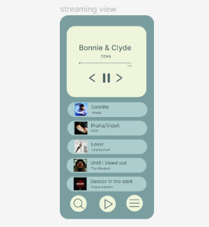
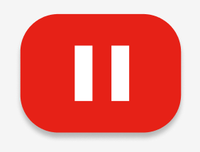
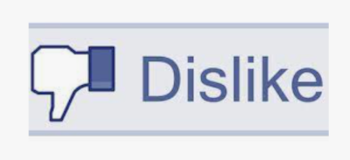
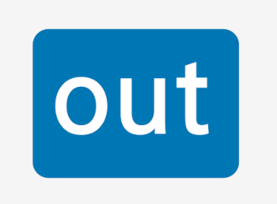

Created In early november, it is a streaming service for listening
to music however one pleases. Further details are linked.

A website where one can watch any video they pleases, ranging from
only seconds to hours long, allows usage for everyone.
A social media app where one can easily find themselves scrolling
mindlessly and loose their time watching short clips created by
other users.

Boomers favourite Social media, where they can freely complain about
the upcoming generation's doings

A social media site for users to create a heiarchy depending on how
many connections they have managed to accumulate